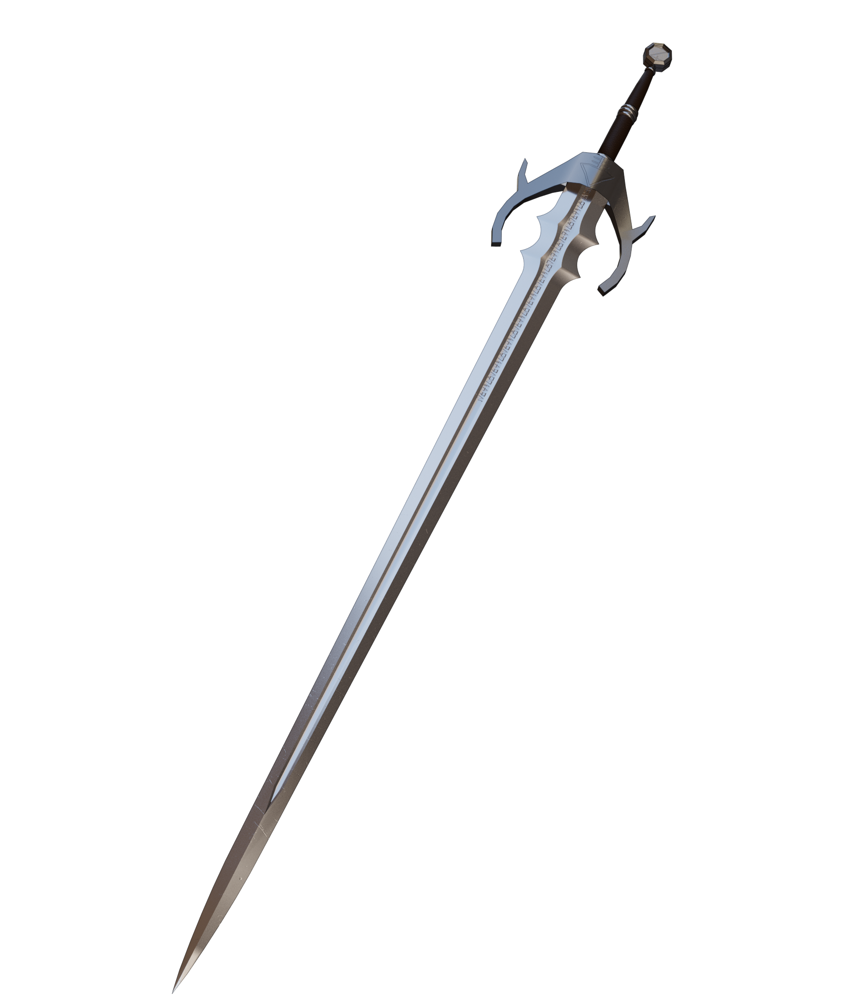
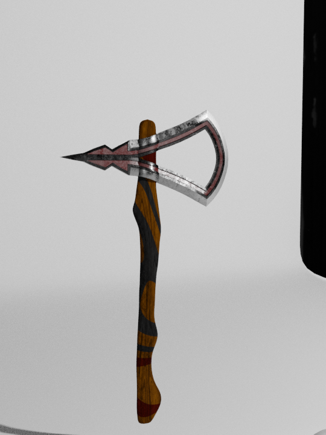

Longsword
Status: Complete
Click here or on the image to visit the store page.
The longsword, or so it ended up being called was my first model I tried selling commercially. Getting a blade looking realistic is suprisingly difficult but after 10 or so hours, I got it looking moderatly good. The model itself features a blade, a curved guard, a two handed grip, and a simple pommel. The guard, pommel, and blade all feature etched runes as well. For the creation of this model, I took a lot of inspiration from the assets from the Witcher series of books, and games.
Ornamental Tomohawk
Status: Unfinished
My second adventure into professional 3D modeling was this axe. The difference in quality between this axe and the sword above is quite noticable. By this time I had learned a lot more about Blender as a program, and 3D modeling workflow in general. This axe, although it still isn't completed, took me only about 5 hours. I created this one from memory (meaning I used no reference images), but it is still in some way inspired by a mix of viking weaponry and Native American ceremonial tools.
Elegant Door
Status: Unfinished

This doorway is by far my most abitious project yet. I have always been interested in weapons and that sort of thing, so the structure and composition of those 3D models comes naturally to me. This doorway, though, relies heavily on Christian style achritecture to look interesting at all. I know nearly nothing about old architecture, so this has been quite the challenge. I have a long way to go before this model is ready to be distributed.